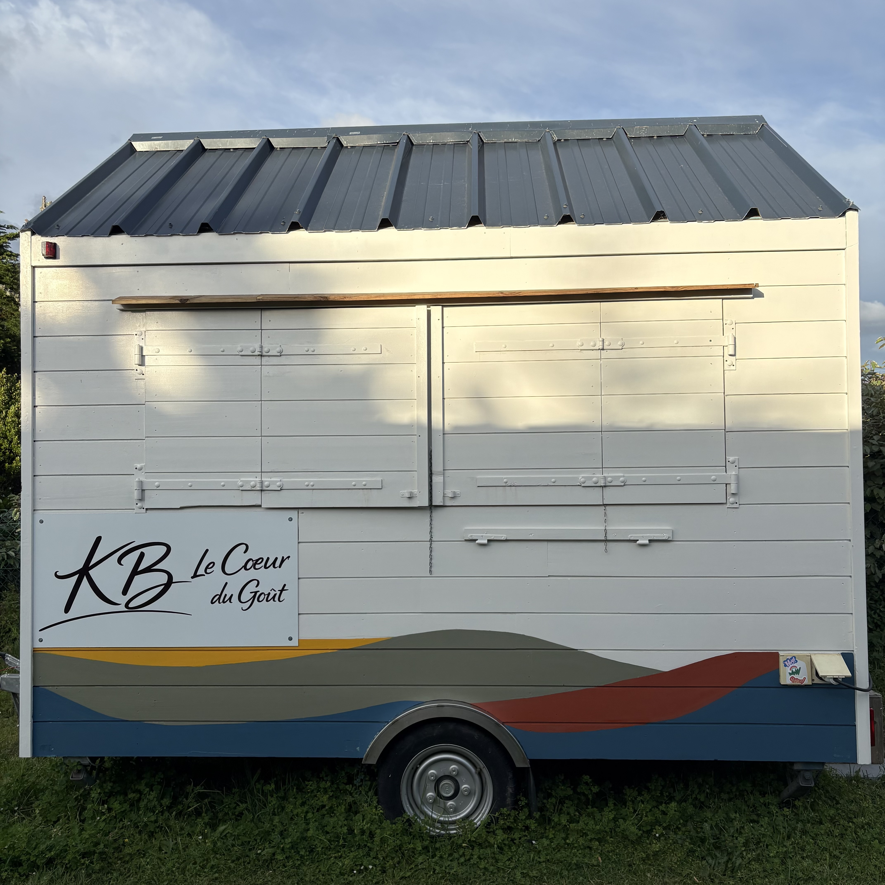
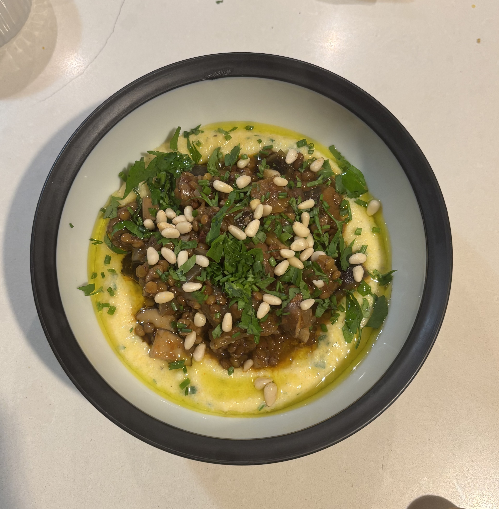
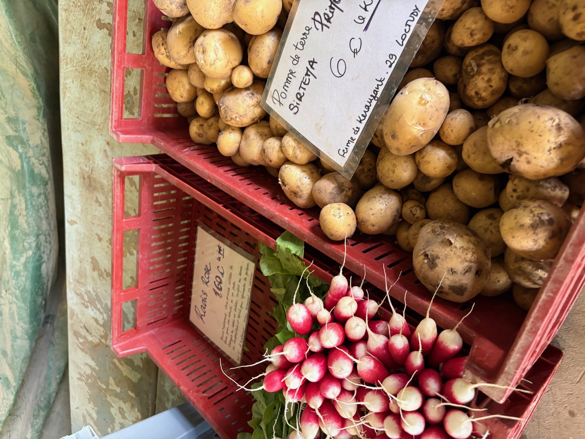

Un food truck version cheffe
Retrouvez-nous selon les jours sur nos différents emplacements et venez partager un moment gourmand autour d'une cuisine fraîche, locale et de saison.

Une carte vivante, locale et pensée au rythme des saisons, pour vous offrir chaque jour le meilleur des produits du moment.

Retrouvez nos jours et horaires de présence selon nos emplacements.
Notre cuisine repose sur une idée simple : travailler des produits frais, locaux et de saison pour proposer des plats gourmands, accessibles et inspirés.
À travers une approche bistronomique et une carte qui évolue au fil des arrivages, nous mettons à l'honneur le savoir-faire de nos producteurs tout en laissant une place à la découverte et aux influences venues d'ailleurs.
Derrière les fourneaux, Marie, cheffe passionnée et forte de plus de 10 ans d'expérience, imagine une cuisine sincère et généreuse, nourrie par son parcours professionnel, ses voyages et ses rencontres culinaires.
Plus qu'un simple repas, nous souhaitons offrir un moment de partage, de convivialité et de plaisir autour du goût.



Mariages, événements d’entreprise, anniversaires ou soirées privées.
Sourcing régional et producteurs partenaires.
Préparations artisanales réalisées chaque semaine.
Une carte évolutive selon les arrivages.
Une cuisine pensée autour du partage et de la convivialité.